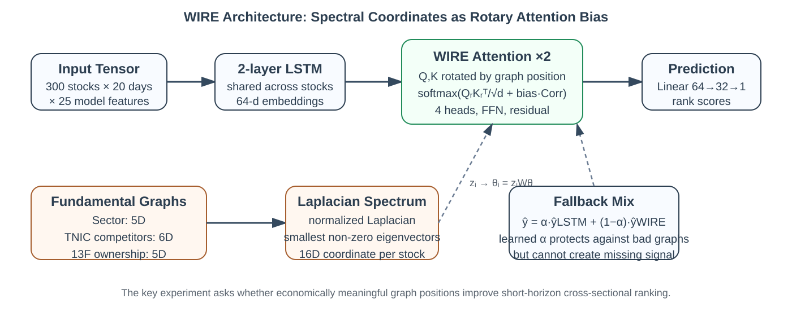
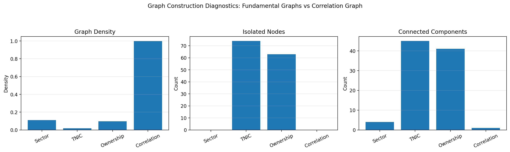
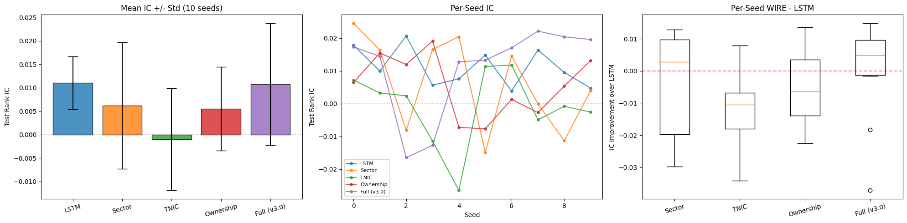
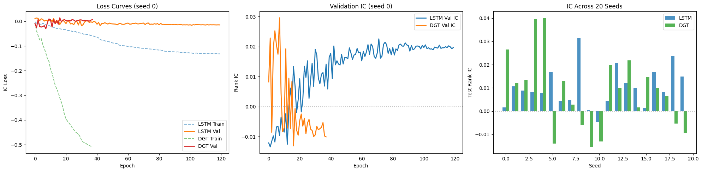
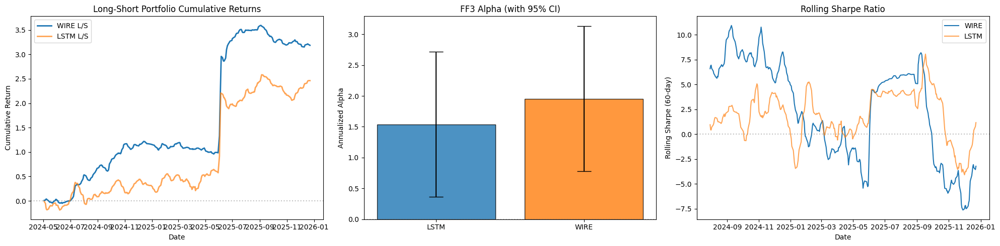
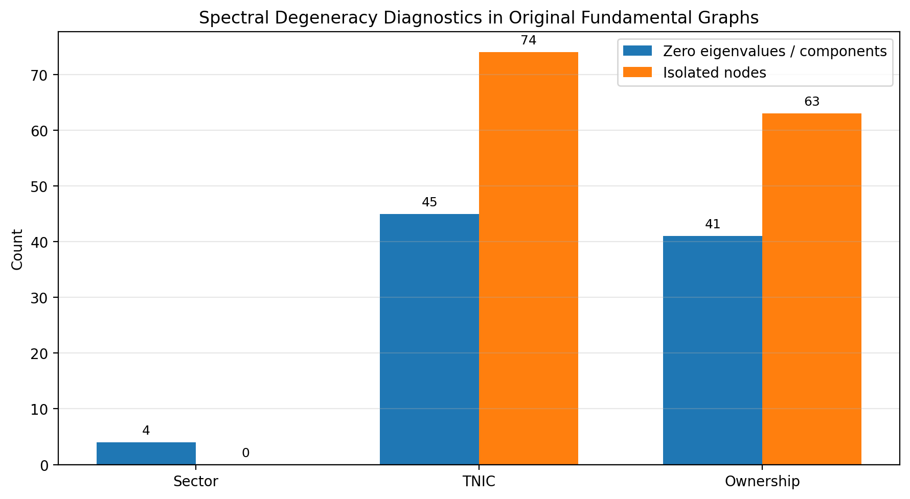

1. Why this question matters
A stock rarely moves for reasons that belong only to that stock. Banks move with rates, chipmakers move with the semiconductor cycle, and firms with the same large holders can be hit by the same flow-of-funds pressure. A model that looks only at one ticker at a time misses some of that context.
The hypothesis was straightforward: if economically meaningful relationships are encoded as a graph, then a Transformer should be able to use that graph to improve short-horizon cross-sectional stock ranking. The task is ranking rather than price forecasting. On each day, the model predicts which of 300 stocks will have the better five-day forward return, not whether the market as a whole goes up or down.
The experiments did not support the original hypothesis. Correlation-based WIRE sometimes helped, but the improvement was not stable. Fundamental WIRE—the version intended as the main contribution—lost to an LSTM. The analysis therefore focuses on whether the graph itself caused the problem.

2. Related work, and the unresolved question
Graph models are not new in stock prediction. Feng et al. used sector and supply-chain relations for temporal relational ranking [1]. Chen et al. studied relational stock ranking with graph neural networks [2]. Sawhney et al. combined temporal attention with graph or hypergraph structure [3]. The closest baseline for us is Li's Differential Graph Transformer, which builds a dynamic graph from Pearson correlations and uses differential attention to reduce noise [4].
These papers provide relevant baselines, but many of them treat the graph as if it were already the right object. The architecture gets careful attention; the choice of graph receives less pressure. This project makes that choice part of the experiment. Are sector, competition, and ownership graphs actually helpful for predicting five-day return ranks, or do they only appear valid from an economic perspective?
The positional-encoding idea comes from another line of work. Laplacian eigenvectors have been used as graph positional encodings [5]. RoPE rotates query and key vectors to encode position in Transformers [6]. SignNet points out that spectral representations have sign and basis ambiguities that cannot be ignored [7]. WIRE sits between these ideas: it uses graph spectral coordinates to induce RoPE-style rotations. The difference from DGT is the graph choice: three fundamental graphs rather than one statistical correlation graph.
3. The machine learning task
Each sample is one trading day. The input is a 300-stock cross-section, with a 20-day lookback window and 25 model features per stock. The raw close price is kept for target construction, but it is not treated as an ordinary predictive feature.
Output: y ∈ RN, a rank-normalized 5-day forward return mapped to [-1, 1].
yi = 2 · (ranki − 1)/(N − 1) − 1
Objective: LIC = − Pearson(predicted scores, realized ranks)
Metric: Spearman Rank IC on the held-out test set, averaged over random seeds.
The rank normalization matters. A raw return target would be dominated by market-wide moves. Ranking stocks within the same day gives a cleaner question: which names should be placed above the others?
The features include price ratios, log volume, daily returns, RSI, MACD histogram, Bollinger %B, normalized ATR, moving-average ratios, momentum, realized volatility, volume changes, bid-ask spread, turnover, excess return relative to the S&P 500, and four quarterly fundamentals: ROE, leverage, profit margin, and log total assets.
The sample runs from January 2015 to December 2025. The split is chronological: 1,918 training samples, 411 validation samples, and 412 test samples. Training uses batch size 16, a learning rate of 1e-3 with five warmup epochs, ReduceLROnPlateau on validation loss, early stopping on rolling validation IC, and gradient clipping at norm 1.0.
4. What WIRE actually does
WIRE stands for Wavelet-Induced Rotary Encodings. The name is a little broader than the implementation. In this project, the operative mechanism is specific: Laplacian spectral coordinates generate rotary attention angles.
An intuitive way to think about it is seating arrangement. Suppose 300 people need seats, and the available clues are department, competition, and shared investors. People with more shared context should sit closer. WIRE tries to do the same for stocks. Each stock gets a coordinate from the graph, and that coordinate changes how its query and key vectors are rotated during attention.
The backbone is a two-layer LSTM with shared weights across stocks. It turns each stock's 20-day sequence into a 64-dimensional embedding. Then two WIRE attention layers, each with four heads, process the cross-section. For stock i, its 16-dimensional spectral coordinate zi is mapped to rotary angles:
Qirot = RoPE(Qi, θi)
Kirot = RoPE(Ki, θi)
The attention score also receives a dynamic correlation bias:
Corr is a 60-day rolling Pearson correlation matrix denoised using the Marchenko-Pastur rule [10]. With N = 300 and T = 60, the theoretical noise edge is about 10.47, so only a limited number of signal eigenvalues remain. The model also has a learnable mixture between the pure LSTM prediction and the WIRE prediction, allowing it to fall back when graph information is unhelpful.
5. Graphs fed into the model
Three fundamental graphs were used. The sector graph links stocks in the same GICS sector. It is the most connected of the three, with 4,917 edges, density 0.110, no isolated nodes, and four connected components.
The TNIC graph comes from Hoberg-Phillips text-based product-market similarity [8]. It is much thinner: 852 edges, density 0.019, 74 isolated stocks, and 45 connected components. The ownership graph links stocks with high 13F institutional-holder overlap using Jaccard similarity above the 90th percentile. It has 4,337 edges and density 0.097, but still contains 63 isolated nodes and 41 components.
From each normalized Laplacian, the smallest non-zero eigenvectors are taken: five dimensions from sector, six from TNIC, and five from ownership. Concatenating them gives a 16-dimensional coordinate per stock, standardized dimension by dimension.

6. Baselines and experiments
The experiments compare WIRE against two baselines. The first is an LSTM with 58,689 parameters. It uses no graph and predicts ranks from each stock's own history. The second is DGT, a 140,417-parameter graph Transformer using MP-denoised Pearson correlations and differential attention [4]. WIRE has 128,011 parameters, so any improvement would need to come from structure rather than from a lower parameter count.
The experimental suite has five checks. First, WIRE on a dense correlation graph. Second, WIRE on the three fundamental graphs. Third, an ablation using sector only, TNIC only, ownership only, and the full 16-dimensional coordinate. Fourth, the DGT baseline. Fifth, a sensitivity test that stretches the correlation window from 60 to 1000 days.
7. Results
7.1 Correlation WIRE: a limited and non-significant improvement
On the dense Pearson-correlation graph, WIRE reached mean IC +0.0111 ± 0.0131. The LSTM reached +0.0072 ± 0.0057. WIRE won 13 of 20 seeds, but the paired t-test p-value was 0.23. This is not strong evidence. At most, it says that WIRE can use a dense graph that is already close to the target: historical return co-movement.
7.2 Fundamental WIRE: the intended version loses
The main model, using sector, TNIC, and ownership coordinates, was worse than the LSTM. Across 20 seeds, LSTM produced +0.0101 ± 0.0085 mean IC, while WIRE produced +0.0038 ± 0.0131. LSTM won 15 seeds. WIRE won five.
The attention diagnostics point in the same direction. The sector attention ratio was 0.938, close to uniform. This means the model did not pay much more attention within sector than across sector. The graph encodings were present in the model, but they were not producing a useful structural pattern.
7.3 Ablation: TNIC does the most damage
To separate disconnectedness from information quality, the ablation used a low-weight connectivity perturbation: Afixed = A + 0.001(1 − I). This makes the graph mathematically connected without giving the artificial edges much weight. It fixes the spectral decomposition problem, but it does not invent missing economic information.
| Configuration | Spectral dims | Mean IC ± Std | p-value vs LSTM | Wins |
|---|---|---|---|---|
| LSTM, no graph | 0 | +0.0111 ± 0.0056 | — | — |
| Sector only | 5 | +0.0062 ± 0.0135 | 0.391 | 5/10 |
| TNIC only | 6 | −0.0010 ± 0.0109 | 0.008 | 1/10 |
| Ownership only | 5 | +0.0055 ± 0.0090 | 0.174 | 3/10 |
| Full 16D | 16 | +0.0108 ± 0.0130 | 0.950 | 6/10 |
The TNIC-only run gives the clearest result: −0.0010 mean IC and p = 0.008 against LSTM. Sector and ownership are also below LSTM, though not significantly. The full coordinate gets back near the LSTM, likely because sector and ownership reduce the negative effect of TNIC. However, matching the LSTM is still not an improvement.

7.4 DGT: a stronger architecture also does not beat LSTM
DGT also failed to beat LSTM. Across 20 seeds, LSTM reached +0.0101 ± 0.0085 and DGT reached +0.0084 ± 0.0159. LSTM won 11 seeds; DGT won nine. The difference was not significant. This comparison matters because DGT is not a WIRE-specific architecture. Its underperformance suggests the problem is not just one bad implementation of WIRE.

7.5 Portfolio analysis: signal exists, but the backtest has strong assumptions
A daily long-short portfolio was also formed: long the top 30 predicted stocks and short the bottom 30. A Fama-French three-factor regression [9] produced annualized alpha of +195.5% for WIRE and +153.9% for LSTM, with alpha t-statistics of 3.25 and 2.56. R² was around 1% for both.
These numbers should be handled carefully. The backtest assumes daily rebalancing, no transaction costs, no slippage, and no capacity limits. The point is diagnostic: both models appear to capture cross-sectional structure not explained by standard three-factor exposure. It is not evidence that either strategy is deployable.

8. Why fundamental WIRE failed
8.1 Spectral coordinates break down on disconnected graphs
WIRE needs meaningful spectral coordinates. TNIC has 45 connected components and 74 isolated nodes; ownership has 41 components and 63 isolated nodes. For a normalized Laplacian, disconnected components create multiple zero eigenvalues. Isolated nodes often collapse to indistinguishable coordinates.
That means many stocks are effectively placed at the same point in graph-coordinate space. WIRE then gives them similar query/key rotations even though they are not economically identical. This is worse than having no graph at all, because the model is being given a misleading geometry.

8.2 Fundamental similarity is not the same as short-term co-movement
The second problem is conceptual. TNIC competition is a product-market relation, not a five-day return relation. Competitors can move together, but they can also move against each other when market share shifts from one firm to another. A 10-K text similarity score says that two companies describe similar businesses; it does not say their stocks should be neighbors in tomorrow's ranking.
Sector has a different issue. It is real, but much of that information may already be present in returns, volatility, excess returns, and technical indicators. Ownership overlap is also slow-moving because 13F data are quarterly. The target, however, is a five-day forward rank. The time scales do not line up.
The correlation graph performed better for a direct reason: it directly measures the same kind of object the target cares about, namely return co-movement. It gives a weaker economic story, but it is more aligned with the prediction task.
8.3 The signal is too weak for extra parameters
The ICs here are around 0.01. That is a weak signal. LSTM has 58,689 parameters. WIRE has 128,011. DGT has 140,417. In a weak-signal setting, extra parameters help only if the added inductive bias is right. The fundamental graphs did not provide that bias, so the larger models mostly added variance.
9. Is deep learning necessary here?
For the ranking task, deep learning remains useful. The input mixes time-series patterns, technical indicators, fundamentals, volume, and cross-sectional effects. A linear factor model would struggle to represent those interactions directly. The Fama-French regression also suggests that the LSTM and WIRE portfolios contain signal not explained by market, size, and value exposure.
But the project also argues against a common reflex: adding graph deep learning is not automatically progress. Deep learning may be useful for nonlinear ranking. Graph deep learning is useful only when the graph is aligned with the target, sufficiently connected, and measured at the right time scale.
10. What to try next
One next step is cleaner supply-chain data. Compustat segment customer fields are free text and hard to map reliably to tickers. CUSIP-to-CUSIP supply-chain links, such as those available from FactSet-style data, would be more direct than TNIC text similarity and may better capture demand shocks.
Another step is dynamic graph construction. The current fundamental graphs are mostly static. Institutions rebalance quarterly, TNIC updates yearly, and industry structure shifts over time. Recomputing spectral coordinates by quarter might let the model see regime changes instead of forcing one graph to explain eleven years.
A third option is a larger stock universe. With only 300 stocks, TNIC leaves too many names isolated. A Russell 3000-style universe would likely improve coverage and graph density. It would require more compute, but the spectral geometry may contain more usable structure.
11. Ethics
The first issue is fairness. 13F filings and 10-K text are public in principle, but turning them into a usable trading signal requires data access, compute, and modeling expertise. If such models work, the benefits are likely to go first to institutions that already have those resources.
The second issue is crowding. If many funds train similar graph-attention models, they may react to the same structural signals and trade the same clusters of stocks. During stress, that can amplify co-movement instead of simply predicting it. This work stayed in a research setting, but the risk should be stated.
Finally, the portfolio numbers should not be advertised as achievable returns. They come from a frictionless backtest. Presenting them without the assumptions would be misleading.
12. Conclusion
The project began with the idea that stock relationships might improve cross-sectional ranking. The experiments led to a more specific finding. A dense correlation graph gave WIRE a slight, non-significant gain. Fundamental graphs did not help. TNIC was actively harmful in ablation. DGT, a separate graph Transformer baseline, also failed to beat LSTM.
The conclusion is not that graph Transformers are useless. It is that the graph can change the model in a negative way. For short-horizon stock ranking, the graph must be connected, dynamic, and aligned with return co-movement. A graph that is easy to explain can still be the wrong structure for the model.
References
[1] Feng, F., He, X., Wang, X., Luo, C., Liu, Y., & Chua, T. S. (2019). Temporal Relational Ranking for Stock Prediction. ACM TOIS, 37(2), 1–30.
[2] Chen, W., Zhang, Y., & Li, J. (2022). Relational Stock Ranking with Graph Neural Networks. Neurocomputing, 488, 356–370.
[3] Sawhney, R., Agarwal, S., Wadhwa, A., Derr, T., & Shah, R. R. (2021). Stock Selection via Spatiotemporal Hypergraph Attention Network. AAAI.
[4] Li, K. X. (2024). Stock Market Forecasting with Differential Graph Transformer. Stanford CS224W Final Project.
[5] Dwivedi, V. P., & Bresson, X. (2020). A Generalization of Transformer Networks to Graphs. AAAI Workshop on Deep Learning on Graphs.
[6] Su, J., Lu, Y., Pan, S., Murtadha, A., Wen, B., & Liu, Y. (2021). RoFormer: Enhanced Transformer with Rotary Position Embedding. arXiv:2104.09864.
[7] Lim, D., Robinson, J., Zhao, L., Smber, T., Gao, J., & Memoli, F. (2023). Sign and Basis Invariant Networks for Spectral Graph Representation Learning. ICLR.
[8] Hoberg, G., & Phillips, G. (2016). Text-Based Network Industries and Endogenous Product Differentiation. Journal of Political Economy, 124(5), 1423–1465.
[9] Fama, E. F., & French, K. R. (1993). Common Risk Factors in the Returns on Stocks and Bonds. Journal of Financial Economics, 33(1), 3–56.
[10] Marchenko, V. A., & Pastur, L. A. (1967). Distribution of Eigenvalues for Some Sets of Random Matrices. Mathematics of the USSR-Sbornik, 1(4), 457–483.
Local submission note: this page uses only local images and inline CSS. Open index.html directly in Chrome to verify rendering before uploading the zip file.